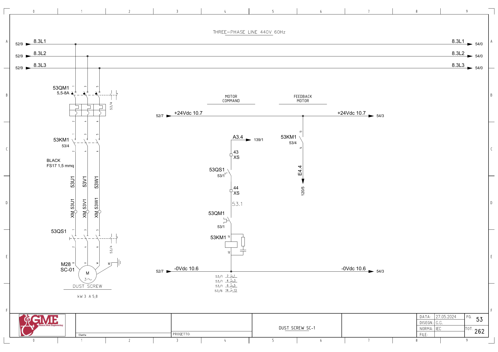

SC01 · 집진 분진 스크루 · 연관 설비 전기 회로 추적
원본 전기도면을 시각 확인한 정적 회로 해석입니다. 현재 배선·입력 극성·파라미터와 현장 측정은 미확인입니다. 전기 작업은 승인된 현장 절차와 자격 범위에서 수행합니다.
1. 도면의 구성과 진단 경계
FG53: M28 SC-01(도면3kW·5.8A), 53QM1·53KM1·53QS1의 직접 기동 회로입니다. 우선23개 목록 밖에서 FN04의90분 감시에 연결되는 설비입니다.
FN04가 읽는 내부 SC01 응답과 실제 스크루 운전을 구분합니다. 접촉기 보조접점 피드백은 분진 배출량·회전·막힘 정상 여부를 직접 보증하지 않습니다.
추가 시공도면 · 접속함·케이블·배관 경로 — 승인·현재 설치는 확인 전입니다.
2. 기동 명령
A3.4 ↔ 백업 %Q3.4 / start sc01 · FG53 · PDF 54
- A3.4 (FG139/1)
- XS:43 → 53QS1 보조접점 → XS:44
- 53QM1 보조접점
- 53KM1 코일 A1→A2 / 0Vdc10.6
전달·사용 위치: 원본1956의 SC01 요청·출력과1803의 고장 감시,1843·1844의 자동 요청을 연결합니다.
진단 판단: 상위 자동 요청과 실제 출력 이후 접점·접촉기·기계 전달을 나눠 확인합니다. 고장 시 분진 배출과 팬 연동 영향을 기록합니다.
원본 심볼 직접 참조: 1803 / allarms 1 / ORef 864 · 1956 / motors 1 / ORef 806
3. 접촉기 응답
E4.4 ↔ 백업 %I4.4 / sc01_fbk · FG53 · PDF 54
- +24Vdc10.7 → 53KM1 보조접점13→14
- E4.4 → FG120/5
전달·사용 위치: 원본1964는 Inputs.FeedbackMotor SC-01을 FN04의90분 지연 정지 조건 중 하나로 읽습니다. 물리 입력의 내부 전달은 미확정입니다.
진단 판단: 팬 후속 정지 이전의 최초 SC01 피드백 상실과 스크루 상태를 기록합니다. 경보 시점을 원인 발생 시점으로 대신하지 않습니다.
원본 심볼 직접 참조: 1033 / time work motor / ORef 1936
위 직접 참조는 복원 원본의 같은 심볼명 위치입니다. 읽기·쓰기 역할, 현재 호출, 현장 사용을 함께 확정한 표는 아닙니다. 원본의 simulation 블록 참조가 있더라도 이번 작업에서 가상 실행·개발·시험은 진행하지 않았습니다.
원본 PLC와 연결
남은 확인과 기록
- SC01 실물 태그·설치·분진 배출·운전 피드백 전달 확인
- FN04와SC10/SC11·VR03/04/05의 전체90분 감시 연결을 별도 추적
도면을 함께 확인
FG 53 · 해당 도면 보기

| 기록 항목 | 내용 |
|---|---|
| 현장 식별 | 설비 ID / 반·단자대 / 모터·인버터 명판 / 도면 개정 |
| 신호 구간 | PLC 명령 / 단자 / 직렬 접점 / 릴레이 / DI / 응답 접점 / 입력 / 내부 DB |
| 관찰 결과 | 시각 / 운전 모드 / 기준값의 근거 / 관찰값 / 최초 불일치 구간 |
| 복구 확인 | 원인·조치 / 원인 해제 / Reset / 재요청 / 주변 설비 영향 |